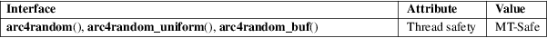

arc4random, arc4random_uniform, arc4random_buf − cryptographically-secure pseudorandom number generator
Standard C library (libc, −lc)
#include <stdlib.h>
uint32_t
arc4random(void);
uint32_t arc4random_uniform(uint32_t
upper_bound);
void arc4random_buf(void
buf[.n], size_t
n);
These functions give cryptographically-secure pseudorandom numbers.
arc4random() returns a uniformly-distributed value.
arc4random_uniform() returns a uniformly-distributed value less than upper_bound (see BUGS).
arc4random_buf() fills the memory pointed to by buf, with n bytes of pseudorandom data.
The rand(3) and drand48(3) families of functions should only be used where the quality of the pseudorandom numbers is not a concern and there’s a need for repeatability of the results. Unless you meet both of those conditions, use the arc4random() functions.
arc4random() returns a pseudorandom number.
arc4random_uniform() returns a pseudorandom number less than upper_bound for valid input, or 0 when upper_bound is invalid.
For an explanation of the terms used in this section, see attributes(7).

BSD.
OpenBSD 2.1, FreeBSD 3.0, NetBSD 1.6, DragonFly 1.0, libbsd, glibc 2.36.
An upper_bound of 0 doesn’t make sense in a call to arc4random_uniform(). Such a call will fail, and return 0. Be careful, since that value is not less than upper_bound. In some cases, such as accessing an array, using that value could result in Undefined Behavior.
getrandom(3), rand(3), drand48(3), random(7)